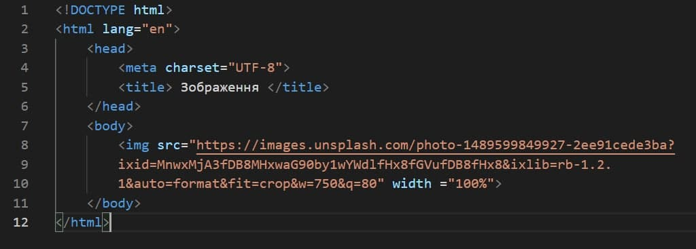

- Опис предметного середовища
- Тема, мета і
місце розташування Лабораторної роботи №1
- ВИСНОВКИ
|
Код вставки зображення та результат:

Теорія
HTML-зображення додаються на веб-сторінки за допомогою елемента "img". Використання графіки робить веб-сторінки візуально привабливішим. Зображення допомагають краще передати суть і зміст веб-документа. Елементи "map" і "area" дозволяють створювати карти-зображення з активними областями.
У HTML для додавання зображень використовуються теги:
1. img - призначений для відображення на веб-сторінці зображень в графічному форматі GIF, JPEG або PNG;
2. map - служить контейнером для елементів "area", які визначають активні області для карт-зображень. Такі області встановлюють невидимі зони на зображенні, що є посиланнями на HTML-документи. Мета використання тега "map" - в зв'язуванні тега "img" з клієнтської картою-зображенням;
3. area - визначає активні області зображення, які є посиланнями. Така карта за зовнішнім виглядом нічим не відрізняється від звичайного зображення, але при цьому воно може бути розбите на невидимі зони різної форми, де кожна з областей служить посиланням;
Атрибути тега img:
- alt - додає альтернативний текст для зображення. Виводиться на місці появи зображення до його завантаження або при відключеній графіку, а також виводиться спливаючій підказкою при наведенні курсору миші на зображення.
- crossorigin - дозволяє завантажувати зображення з ресурсів іншого домену за допомогою CORS-запитів. Зображення, завантажені в полотно за допомогою CORS-запитів, можуть бути використані повторно.
- height - висота зображення.
- ismap - вказує на те, що картинка є частиною зображення-карти, розташованого на сервері (зображення-карта - зображення з інтерактивними областями).
- longdesc - URL розширеного опису зображення, яке доповнює атрибут alt.
- src - задає шлях до зображення.
- sizes - задає розмір зображення в залежності від параметрів відображення.
- srcset - створює список джерел для зображення, які будуть обрані, виходячи з дозволу екрану. Може використовуватися разом або замість атрибута src. Значенням атрибута є одна або кілька рядків, розділених комою.
- usemap - звизначає зображення в якості карти-зображення.
- width - задає ширину зображення.
Атрибут тега map:
- name - ім'я карти-зображення.
Атрибути тега area:
- alt - задає альтернативний текст для активної області карти.
- coords - Визначає позицію області на екрані. Координати задаються в одиницях довжини і розділяються комами:
для кола - координати центру і радіус кола;
для прямокутника - координати верхнього лівого і правого нижнього кутів;
для багатокутника - координати вершин багатокутника в потрібному порядку, також рекомендується вказувати останні координати, рівні першим, для логічного завершення фігури.
- download - доповнює атрибут href і повідомляє браузеру, що ресурс повинен бути завантажений в момент, коли користувач клацає по посиланню, замість того, щоб, наприклад, попередньо відкрити його (як PDF-файл).
- href - вказує URL-адресу для посилання. Може бути вказано абсолютний або відносний адресу посилання.
- hreflang - визначає мову пов'язаного веб-документа. Використовується тільки разом з атрибутом href. Прийняті значення - абревіатура, що складається з пари букв, що позначають код мови.
- media - визначає, для яких типів пристроїв файл буде оптимізовано. Значним може бути будь-який медіа-запит.
- rel - Доповнює атрибут href інформацією у цій справі між поточним і пов'язаним документом.Прийняті значення:
alternate — посилання на альтернативну версію документа (наприклад, друковану форму сторінки, переклад або дзеркало).
author — посилання на автора документа.
bookmark — ппостійний URL-адреса, що використовується для закладок.
help — посилання на довідку.
license — посилання на інформацію про авторські права на даний веб-документ.
next/prev — вказує зв'язок між окремими URL. Завдяки цій розмітці Google може визначити, що зміст даних сторінок пов'язано в логічній послідовності.
nofollow — забороняє пошуковій системі переходити за посиланнями на даній сторінці або по конкретній посиланням.
noreferrer — вказує, що переході по посиланню браузер не повинен посилати заголовок HTTP-запиту (Referrer), в який записується інформація про те, з якої сторінки прийшов відвідувач сайту.
prefetch — вказує, що цільовий документ повинен бути кешуватися, тобто браузер у фоновому режимі завантажує вміст сторінки до себе в кеш.
search — вказує, що цільовий документ містить інструмент для пошуку.
tag — вказує ключове слово для поточного документа.
- shape - задає форму активної області на карті і її координати. Може приймати наступні значення:
rect - активна область прямокутної форми;
circle - активна область в формі кола;
poly - активна область в формі багатокутника;
default - активна область займає всю площу зображення.
- target - Вказує, куди буде завантажений документ при переході по посиланню.
Набуває таких значень:
_self - сторінка завантажується в поточне вікно;
_blank - сторінка відкривається в новому вікні браузера;
_parent - сторінка завантажується у фрейм-батько;
_top - сторінка завантажується в повне вікно браузера.
- type - вказує MIME-тип файлів посилання, тобто розширення файлу.
|